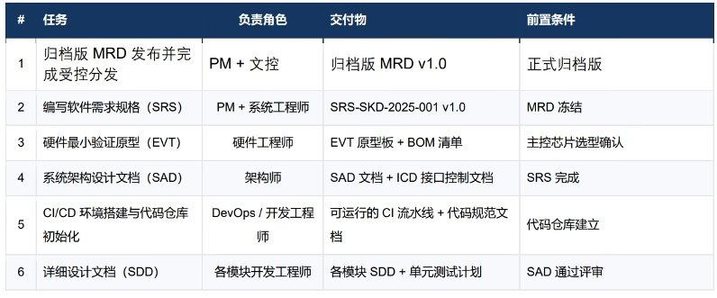

软件开发方法论
软件开发方法论
企业中的软件开发不是像我之前那样，有个idea就直接开始编码，而是先写好一个完善的文档，其他人照着文档进行开发的。我们在Vibe Coding的时候，最好也用这种方式，把需求边界进行最大程度的约束，这样可以有效提高AI生成代码的可用性，减少返工成本
基本流程：产品需求文档（PRD）—>软件需求规格（SRS）—>系统架构设计（SAD）—>详细设计（SDD）—>编码实现

产品需求文档
产品需求文档重点回答三个核心问题:
- 1.市场上存在什么问题?(市场背景与机会)
- 2.我们要为谁解决?(目标用户画像)
- 3.我们要做什么/不做什么?(产品范围与优先级)
产品需求文档的目的与范围：
- 用于定义项目的市场需求边界，明确立项目标、目标用户、产品范围及阶段性约束，并作为后续软件需求规格(SRS)、系统架构设计和测试规划的输入
产品需求文档的作用：
- 给所有人建立项目共识，定义好产品、技术的边界
All articles on this blog are licensed under CC BY-NC-SA 4.0 unless otherwise stated.